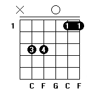
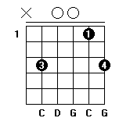
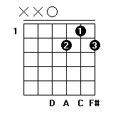
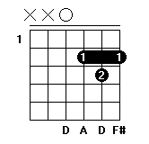
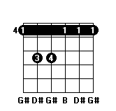
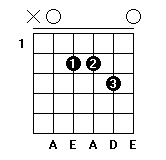
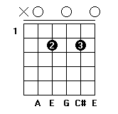
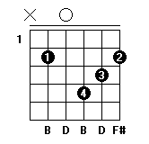
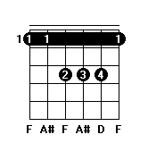
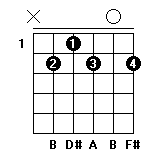

C
D
E
F
G
A
B
1
2
3
4
5
6
7
C
和弦指法图大全
Csus4

Csus2

C
C7
#Cm
D
和弦指法图大全
#Dm
D7

D

Dm
E
和弦指法图大全
E7
E7
E
Em
F和弦指法图大全
#F7
#F
#Fm
F
G
和弦指法图大全
B7
Gm
#Gm

G7
G
A
和弦指法图大全
Asus4

A7

A
Am
B
和弦指法图大全
Bm/E

B
bB

B7

Bm
吉他A和弦指法图大全
吉他B和弦指法图大全
∧
∨